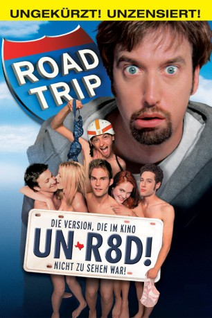
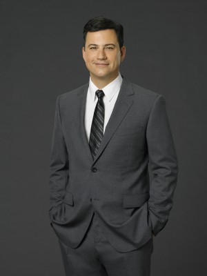
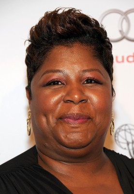
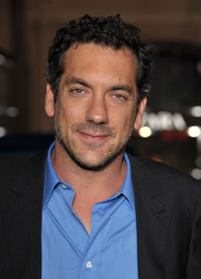

#1958 Road Trip - Heißer Trip nach Texas
Alternativ: Road Trip
 
 IMDB-Wertung: 6.5 / 10
IMDB-Wertung: 6.5 / 10  Metascore: 0
Metascore: 0 
Josh hat ein riesiges Problem - mal ganz abgesehen von der Tatsache, dass er in Ithaca im Staate New York auf's College geht und seine langjährige Freundin Tiffany in Austin, Texas hockt: Ein Videoband, auf dem er der attraktiven Beth viel zu nahe kommt, wurde versehentlich an Tiffany geschickt. Nun bleiben ihm gerade drei Tage, um Texas zu erreichen, bevor das Video dort ankommt!
Jahr: 2000
Dauer: 93 Minuten
FSK: 12
Land: USA Studio: DreamWorks DistributionTonspuren: DD5.1 - ,
Untertitel:
Auflösung: 1080p (1920x1080) Größe: 7014 MB
Genre: Komödie
Regisseur: Todd Phillips
Drehbuch: Alex Kendrick
Soundtrack:
Darsteller:
 Breckin Meyer als Josh Parker
Breckin Meyer als Josh Parker- Seann William Scott als E.L.
 Amy Smart als Beth Wagner
Amy Smart als Beth Wagner Paulo Costanzo als Rubin Carver
Paulo Costanzo als Rubin Carver- DJ Qualls als Kyle Edwards
- Tom Green als Barry Manilow
- Rachel Blanchard als Tiffany Henderson
- Anthony Rapp als Jacob
 Fred Ward als Earl Edwards
Fred Ward als Earl Edwards- Andy Dick als Motel Clerk
 Ethan Suplee als Ed
Ethan Suplee als Ed Horatio Sanz als French Toast Guy
Horatio Sanz als French Toast Guy Rhoda Griffis als Tour Group Mom
Rhoda Griffis als Tour Group Mom Edmund Lyndeck als Jack Manilow, Barry's Grandpa
Edmund Lyndeck als Jack Manilow, Barry's Grandpa Ellen Albertini Dow als Mrs. Manilow, Barry's Grandma
Ellen Albertini Dow als Mrs. Manilow, Barry's Grandma- Jessica Cauffiel als The Wrong Tiffany
 Kohl Sudduth als Mark
Kohl Sudduth als Mark- Rini Bell als Carla
- Jaclyn DeSantis als Heather
- Patricia Gaul als Cookie Edwards
 Mary Lynn Rajskub als Blind Brenda
Mary Lynn Rajskub als Blind Brenda Tim Ware als Officer Bortz
Tim Ware als Officer Bortz- Richard Peterson als Michael
- Phe Caplan als Boston Coed
- Avery Kidd Waddell als Jeff
 Omar J. Dorsey als Lawrence
Omar J. Dorsey als Lawrence- Mia Amber Davis als Rhonda
-  Jimmy Kimmel als Corky the Dog
- Todd Barry als Campus Security #1
- Rachel Marinacci als Tour Group Member
- Bob Place als Tour Group Member
- Marla Malcolm als Tour Group Member
 Matt Walsh als Crime Scene Photographer
Matt Walsh als Crime Scene Photographer John Ross Bowie als Waiter
John Ross Bowie als Waiter- Cristen Coppen als Kim
-  Cleo King als Woman on Bus
 Lori Beth Sikes als Party Guest
Lori Beth Sikes als Party Guest- Aerica D'Amaro als Barry's Girl
-  Todd Phillips als Foot Lover on Bus
- Deborah Zoe als E.L.'s Girlfriend
- Cameron Beach als Bum #1 at Sperm Bank , uncredited
- Valeisha Butterfield als College Student , uncredited
- Randall Carlton als Class Superlative , uncredited
- Doshia Darmane als Party Girl , uncredited
- Adam Fristoe als Partier , uncredited
- Mandy Lauderdale als Extra , uncredited
- Summer LeAnn als Girl on Pool Tire Swing , uncredited
- Ron Marino als Party Guest , uncredited
- Patrick Millsaps als Police Officer , uncredited
- Muretta Moss als Sorority Girl , uncredited
Datei: X:\2-Dilogie(N-Z)\Road Trip\Road Trip - Heißer Trip nach Texas (2000, FSK12, 1920x1080).mkv seit 09.09.2015
Festplatte: HD Collection-2(A-Z)-3(A-M)
 Alle Filme aus Gruppe '2-Dilogie(N-Z)\Road Trip'
Alle Filme aus Gruppe '2-Dilogie(N-Z)\Road Trip'